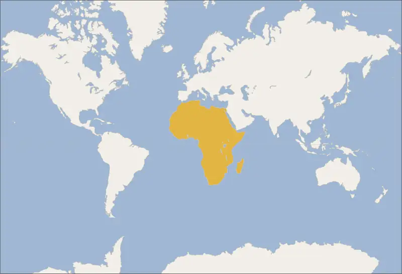
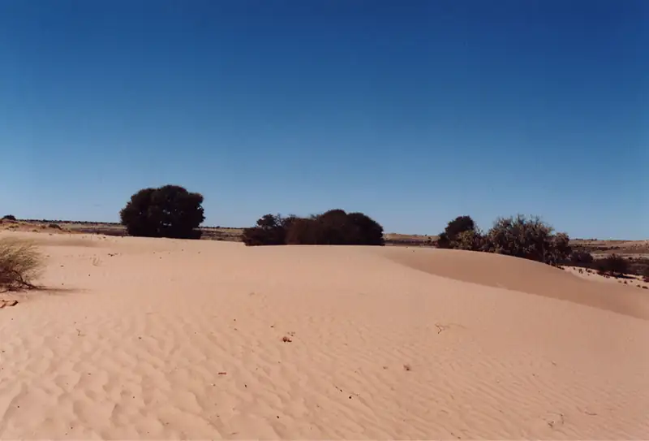
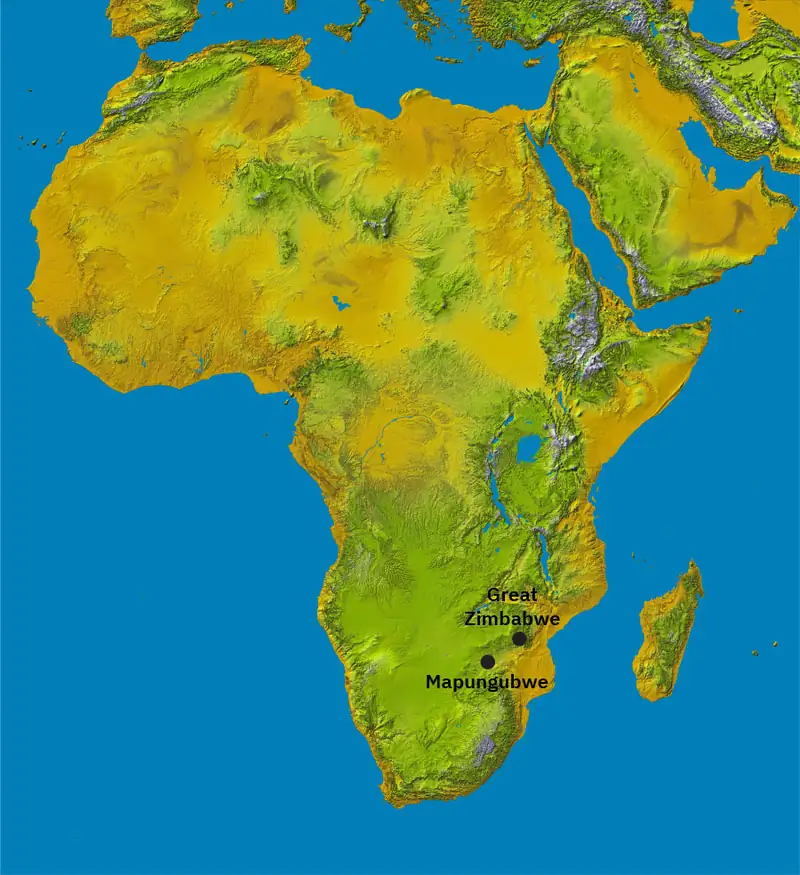
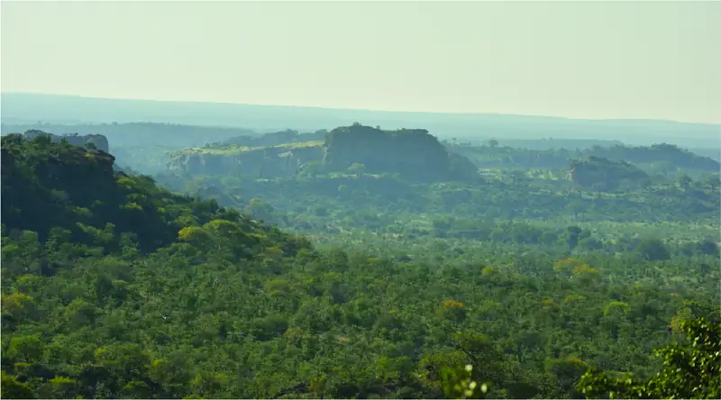
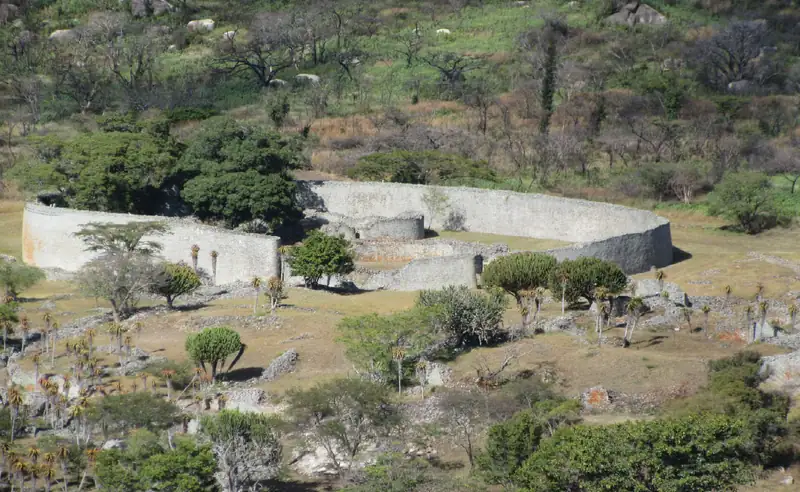

Chapter 15: States and Societies in Sub-Saharan Africa¶
Introduction¶
![An image of pages are shown. The background shows six vertical panels with highly detailed maps in rich colors showing land, water, and images of people, animals, and locations in a variety of colors and sizes. Overlapping the middle of the panels is a large rectangular beige page with orange and browns lines crisscrossing the page in all directions that is a larger image of the bottom of the first panel on the left. In the middle of the image a dark skinned man is seated cross-legged on a short gold throne with orange pillows. He wears a gold crown, has a black curly beard and short curtly black hair, wears an off-white long flowing shirt, holds a pointy scepter in one hand and a round gold ball in the other which he looks at. At the top left and right of this middle panel is scripted writing in black. Above his head is an image of a white house with an orange roof on a brown, short, rounded hill. To the left of the man is a round building with off-white walls and an orange roof. In the middle of the rood a long, thick pole sticks up with a round ball at the top. Below the building are orange and blue large letters. To the left of the building is a large gray and black trapezoid-type shape with tick marks on the angled side and a ledge sticking out the flat side with a gold ball sitting on top. Below that another round off-white and orange structure is seen sitting on a gray stone pedestal with two wavy lines above it. A square white building with a tiled roof is located to the left of the man in the middle’s feet. Below the building is an oval gray and white wavy image. To the right of the man are two off-white and orange structures, one on a green mound and the other sitting along. In the bottom right corner is another off-white and orange structure with three towers coming out of the top and a very tall flag pole with a gold ball at the top and a black and gray flag shown partially cut off. This building sits on a brown and black oval mound with wavy gray lines underneath it.](img/osx-worldhist-a15-00-m-catalan.webp)
“This king is the greatest of the Muslim kings of the Sudan. He rules the most extensive territory, has the most numerous army, is the bravest, richest, the most fortunate, the most victorious over his enemies, and the best able to distribute benefits.” So wrote al-Umari of the fourteenth-century Malian king Mansa Musa. An official of the Mamluk Sultanate and Mansa Musa’s contemporary, al-Umari was in a unique position to describe the great Sudanic king of West Africa and his legendary wealth. At this time, Mansa Musa’s kingdom was the latest state in the history of West Africa to exploit its strategic location astride the trans-Saharan trade routes (Figure 15.1).
![A timeline of events from this chapter is shown. 49: Christian community founded in Alexandria, Egypt. 395: Augustine appointed Bishop of Hippo; a faded and worn image of a man in long white robes sitting and reading a large book on a rich background is shown. 642: Muslims conquer North Africa. 650: City of Gao founded. 700: the dinar becomes North African common currency. 1235: Sundiata consolidates control over the Mande. 1300-1400: Great Enclosure of Zimbabwe constructed; an image of two round stone structures is shown with a sandy ground, broken stones in the forefront and a tall large brick wall in the background. 1312-1337: Mansa Musa rules Mali; an image in shown of a man sitting in the middle in a gold crown holding a scepter and gold ball surrounded by various images of building, script, and orange and brown crisscrossing lines. 1464: Sunni Ali becomes first king of Songhai Empire.](img/osx-worldhist-a15-00-timeline.webp)

15.1 Culture and Society in Medieval Africa¶
Learning Objectives
By the end of this section, you will be able to:
- Analyze the relationship between the physical geography of Africa and the migration of peoples like the Bantu
- Discuss how Christianity and Islam arrived and spread throughout western Africa
As the second-largest continent on the planet, Africa’s vast landmass possesses a great variety of different terrains and climatic regions. In some cases, these regions have inhibited the movement of people, technologies, languages, cultures, and religions. For example, the Sahara stretches from the Atlantic coast of northwest Africa to the Red Sea in Egypt and forms a nearly impassable barrier between the Mediterranean world and sub-Saharan Africa. Only with considerable effort have some groups been able to penetrate this arid zone. For this reason, the people of North Africa have historically had stronger cultural, political, and religious connections to the Mediterranean world than the peoples south of the desert. Other regions like the Sahel (the environmental threshold that is the southern portion of the Sahara) and the tropical woodland savanna are spread across large portions of the continent and have in some ways encouraged the migration of groups. The migrating Bantus, for example, spread their languages and ironworking technology throughout this region.
African Geography, Migrations, and Settlement¶
North of the Sahara is a thin strip of forest and scrubland hugging the southern shores of the Mediterranean Sea. Like other parts of the Mediterranean world, it has a relatively mild climate with sufficient rainfall, wet winters, and dry summers. For this reason, the arable land there is suitable for growing grains like wheat and barley, originally domesticated in the Fertile Crescent and disseminated around the sea over thousands of years. Likewise, this northern African region has had a long history of cultural contact with other Mediterranean cultures like the Greeks, Phoenicians, and Romans. As a result, the cultural practices, religions, and languages of the larger Mediterranean world have had, and continue to have, a huge impact on this region.
South of the Sahara is the Sahel, a semiarid belt of land that separates the desert in the north from the savanna in the south. The Sahel is a transitional zone that stretches some 3,300 miles across the continent. The farther south, the longer is the rainy season (four months on average), the more temperate is the climate, and the greater is the abundance of pasturage and forage plants for livestock (especially cattle and sheep), including grasses, thorny shrubs, and baobab trees. The word Sahel is derived from the Arabic sahil, meaning “shore.” This is a reference to the view held by many that the Sahara was a vast sea of sand that could be navigated only with great difficulty.
The Sahara’s extremely dry conditions are hostile to both plants and animals, so only small-scale human settlements are possible. These are clustered around the desert’s oases, which amount to a fraction of a percentage of its total landmass. During the Middle Ages, these oases were crucial hubs connecting trade routes across the desert, nowhere more so than in West Africa, where medieval kingdoms competed for control over markets and the movement of goods across the region.
During the medieval period, the Sahara provided powerful West African kingdoms with a vital commodity: salt. Almost completely unobtainable in the inland regions south of the Sahara, salt was mined from sites such as Taghaza and transported in enormous slabs on the backs of camels in caravans that crossed the desert to West African villages and beyond (Figure 15.4). Salt became the second most prized good traded across the Sahara—the first being gold. Indeed, salt was such a valuable commodity that the king of Ghana stored it in the royal treasury alongside gold nuggets.
![A sepia colored photograph is shown of a dry, sandy desert with simple round huts with rectangle doors in the background. In the front, a line of nine camels linked together with rope walks with rectangular slabs tied at their sides. Two figures lead the line dressed in long robes in white and dark colors with matching cloths tied on their heads. By the sixth camel, fives figures walk dressed in long robes and cloths on their heads in white and dark colors. The background shows the dry desert and a white sky.](img/osx-worldhist-a15-01-salt.webp)
The southern frontier of the Sahel is marked by the transition to grasslands and tropical woodlands of the savanna. While the Sahara is dry and arid, the savanna is more temperate and wetter, carpeted with grasses and studded by scattered trees. At its extreme end near the West African rainforests stretching from modern-day Sierra Leone to Ghana, the savanna can see as much as forty-eight inches of rain per year (the rainy season lasts from May to October), which is similar to the average annual rainfall of New York City in the United States. Alongside a greater abundance of vegetation, the savanna is also home to a wider range of wildlife, including cattle, antelope, and giraffes. Endowed with a hospitable environment, climate, and geography, the plains of the savanna have historically been the region with the greatest concentration of human settlement in Africa.
Winding through the savanna and Sahel regions of West Africa is the Niger River. Along its fertile banks, people have grown staple crops like sorghum, African rice, and millet for hundreds of years. Approximately 2,500 miles in length, the Niger is West Africa’s longest river. It was critical to the development of medieval West African kingdoms, both for its ability to sustain intensive agriculture and as a crucial transport conduit for goods and commodities (Figure 15.5). It was in the areas drained by the Niger River where West Africa’s great empires emerged, profiting from the flows of salt from the north and gold from the south. In this way, these empires grew fabulously wealthy.
![A map is shown with water highlighted blue and land highlighted beige. The Mediterranean Sea is located to the northeast, the Strait of Gibraltar is located in the northwest, and the Gulf of Guinea is labelled in the south. Lake Chad, the Niger R., the Senegal R., the Benue R, and the Congo R. are labelled in Africa. The following countries are labelled in Africa, from north to south: Tunisia, Morocco, Algeria, Libya, Western Sahara (Morocco), Mauritania, Mali, Cabo Verde (Cape Verde), Senegal, Niger, Chad, Gambia, Guinea-Bissau, Guinea, Burkina Faso, Sierra Leone, Liberia, Cote D’Ivoire, Ghana, Togo, Benin, Nigeria, Central Africa Republic, Cameroon, and Equatorial Guinea. The cities of Timbuktu and Gao are labelled with red stars on the Niger R. in Mali.](img/osx-worldhist-a15-01-m-wafrgeo.webp)
To the south of the savanna lies the tropical rainforest, Africa’s third major environment alongside the desert and the savanna. Relative to the Sahara, the African rainforest covers a far smaller geographic footprint: some two million square miles, or roughly 10 percent of the continent’s total landmass. Nevertheless, the rainforest is rich in biodiversity, including pygmy hippopotamuses, giant forest hogs, canopy monkeys, and chimpanzees, as well as thousands of species of plants. In West Africa, dense stretches of rainforest can be found in Sierra Leone, Liberia, and Côte d’Ivoire. In this area, the Bantu initially encountered the Nok people, from whom they acquired the metallurgical knowledge that enabled them to move into and later emerge from the equatorial rainforest between 500 and 1000 CE. The gradual dispersal of the Bantu throughout much of southern Africa followed.
Bantu speakers had been migrating from this area possibly since as early as 3000 BCE. But with the adoption of ironworking technology from the Nok, these ironworking farmers were able to travel throughout much of the eastern, western, and southeastern regions of the subcontinent. Their Iron Age economy was dominated by farming, mostly of sorghum and millet, with some livestock including cattle, pigs, and chickens, although animal husbandry tended to be secondary to farming. Because the regions into which they moved were only thinly populated by roving bands of hunter-gatherers, the Bantu were able to choose the most suitable land for farming. Early Iron Age Bantu settlements tended to be small, typically consisting of a dozen or so round houses encircling a livestock pen of cattle or goats. Larger settlements (sometimes in the range of several hectares) could be found in regions such as Natal, favored by large Bantu kinship groups because of the combination of rich biodiversity and sparse population. Settlements were placed close to iron ore and wood for the smelting of carbon steel. The early Iron Age Bantu economy necessarily focused on self-sufficiency with little potential for trade, although some small-scale trade did take place, particularly of sought-after commodities like copper and salt in regions of the Congo and Tanzania.
Until about the eighth century CE, the Bantu developed and exploited the resources of the more favorable areas and adapted the local environments. Throughout, they remained a stateless society organized along kinship lines. Women tended crops, prepared food, and minded the smaller children, while men tended livestock, hunted for meat and for animal skins for clothing, and engaged in trade with other villages. Women leaders were the exception; archaeological evidence of male dominance is considerable. Authority was decentralized in any case, with no rigidly hierarchical power structure to exercise central authority.
From the tenth century, relatively powerful Bantu kingdoms began to appear in the savanna to the south of the Central African rainforest, and in the plateau between the Zambezi and Limpopo Rivers in the interior of southern Africa. Their large settlements displaced the region’s earlier inhabitants. This revolution in the ancient African political landscape was the combined result of the introduction of Neolithic cultivation and animal husbandry on the one hand, and the adoption of Iron Age technologies, tools, and weapons on the other. The succession of medieval Bantu kingdoms that emerged dominated these regions economically, politically, and culturally.
Migrating originally from West Africa, the Bantu would have recognized much of the geography and climate of southern Africa: there is desert, such as the Kalahari and Namib in southwest Africa, and vast savanna. Entire regions of the modern countries of Angola, Democratic Republic of the Congo, Zimbabwe, Zambia, Tanzania, and Mozambique are blanketed by grassland, as is a large area that extends from southern Mozambique into northeastern South Africa. Both the vegetation and wildlife of the southern African savanna resemble that of West Africa in many ways. The southern African climate also has much in common with that of West Africa, encompassing everything from semiarid to temperate zones, with each experiencing varying amounts of rain. Broadly speaking, the eastern area of the region (including Mozambique and eastern South Africa) is wetter than the western area. The west is sapped of moisture, in part by the Atlantic Ocean’s cold Benguela Current. The resulting dryness of western South Africa was a key factor in the development of the Kalahari and Namib Deserts (Figure 15.6).

Throughout the Middle Ages, the river systems of southern Africa were exploited by the large civilizations developing there. For example, the Limpopo River basin spreads across the southern reaches of today’s Mozambique and Zimbabwe, the northern extreme of South Africa, and the eastern edge of Botswana. The basin’s temperate climate and well-watered landscape encouraged the migration of San hunter-gatherers from southwestern Africa and the settlement of Bantu peoples. The Bantu, who arrived from the north, brought with them the knowledge of ironworking, farming, and livestock herding they had acquired over generations of migrations throughout sub-Saharan Africa. From the tenth century onward, they used this knowledge to cultivate farms across extensive field systems along the basin and to accumulate large herds of cattle.
As the settlements around the Limpopo River grew, so too did the need to manage the basin’s resources and govern the affairs of the people there. As a result, centralized systems of governance emerged among the Bantu peoples in the region, particularly in the Iron Age culture of Leopard’s Kopje in Zimbabwe. This cattle-keeping culture, whose name derived from the site where it was identified (kopje means “small hill”), dominated the area for nearly two centuries, but by the thirteenth century, it had given way to an even larger and more complex state, Great Zimbabwe.
The Expansion of Christianity in Africa¶
Throughout its history, North Africa’s fate and fortunes have been connected to the Mediterranean Sea and the peoples who share its borders. Whether economic, political, or spiritual, changes and innovations occurring in this region have had lasting and important consequences for Africa. These changes often went hand in hand; as the Roman Empire grew and expanded, for instance, so did Christianity.
Christianity emerged as a distinct religion in the second half of the first century and soon spread into communities around the Roman-controlled Mediterranean world. Being part of the Roman Empire, North Africa became home to some of the world’s earliest Christian communities. According to Christian tradition, Saint Mark traveled to the Egyptian city of Alexandria and founded the first Christian community in Africa there around the middle of the first century. Regardless of whether we accept this tradition as factual or not, it is indisputable that by the third century Alexandria was a major center of Christianity. By that time, the influential School of Alexandria was an important center for theological research, and the bishop of the Church of Alexandria was held by Christians to be as important as the pope (the bishop of Rome). It was from Alexandria that Christianity spread south along the Nile, penetrating the reaches of Upper Egypt.
The growth of the church in Africa mirrored its expansion across the Mediterranean and drew the attention of Roman officials. In general, the Roman Empire was not interested in persecuting the followers of the many religions practiced around the empire, even members of new religions like Christianity. However, some actions of early Christian communities were seen by Roman officials as disruptive to peace and stability in the empire. For example, Christians refused to participate in the state cults that honored the Roman gods and protected Roman society. Such refusal was interpreted as treason and occasionally punished accordingly, such as under Emperor Nero, who ruled from 54 to 68. But during the reign of Emperor Decius in 250, official empire-wide persecution noticeably increased, reaching its height under Emperor Diocletian in 303. During this time, Rome undertook a series of official persecutions meant to restore the primacy of ancient pagan religious worship and practice throughout the empire.
In Africa, these persecutions prompted many orthodox Christians to flee the relative security of the Nile and seek refuge in the western desert. There, some chose to dwell in solitude as hermits while others chose to build monasteries and live as part of communities of the faithful. One of the latter was Antony of the Desert, who, around the year 300, chose to end his life of isolation and welcomed the company of those who wished to live with him and follow his teachings. Soon, numerous religious settlements cropped up throughout the desert (Figure 15.7).
![A map is shown. Land is highlighted beige and water is highlighted blue. White lines crisscross the map and blue and gray lines are shown on the land. Africa is labelled in the south, Europe in the north, and Asia in the east. The Atlantic Ocean is labelled to the northwest, the Mediterranean Sea is labelled in the middle, and the Red Sea and the Gulf of Aden are labelled in the southeast. Green areas labelled on the map indicate “Christian area before 325 CE.” Areas highlighted green include: small areas north and south of the Strait of Gibraltar, small areas all along the coast of the Mediterranean Sea, small areas to the east of the city of Londrum as well as south on the coast, small areas in the south of Europe, and small areas north and north east of the city of Nicaea. Orange areas labelled on the map indicate “Christian area by 600 CE.” Orange areas labelled on the map include: most of western Europe, southern Europe, small areas along the northern African coast, and a large area to the east of the Mediterranean Sea on the way to Asia. Black dotted arrows run throughout the map. One arrow begins just southwest of Tipasa in Africa and runs west, then turns north to head through the city of Tingitanum and then across the Strait of Gibraltar to the city of Corduba in Europe. Another black dotted line with arrows on both ends runs between the city of Ephesus in the northern part of the Mediterranean west and then north to the city of Londrum in northern Europe. It also splits off to the northeast before it hits Londrum. Two dotted arrow lines start in the city of Rome – one heads north and one heads south. Three dotted arrowed lines begin in the city of Byzantium – one heads east just north of the city of Nicaea, one heads northwest and one heads north into Europe, splitting into two. A dotted arrowed line begins in Antioch and heads northeast. Three lines begin in Alexandria – one heads south past the city of Memphis and toward Lake Nasser in Africa, one lines heads south through the middle of the Red Sea, and one heads east to just south of Jerusalem. Other cities labelled on the map, from west to east are: Syracuse, Athens, Pergamum, Palmyra, and Damascus.](img/osx-worldhist-a15-01-m-xianspr.webp)
Within a hundred years, three distinctive forms of monasticism had emerged in northeast Africa. Many isolated hermits continued to dwell in northern Egypt. In southern and northwestern Egypt, however, religiously devout men and women preferred to live a communal existence. Monks in southern Egypt gathered together as bands of “brothers” who lived together and shared their daily work. Another type of monasticism emerged in northwestern Egypt. West of the Nile delta monasteries were more hierarchical in structure. At the head of the monastery was a man known as the abbot (“father”). Around him he gathered other men willing to live according to his directions and his teachings. Religious women also chose to engage in the monastic lifestyle. Like men, some chose to live in communities of the faithful, where they sometimes assumed leadership roles. Others, like Amma (Mother) Sarah, preferred a more solitary existence. According to legend, for sixty years Amma Sarah lived a severely ascetic existence in a small dwelling beside a river, probably the Nile, at which she never looked because she was so focused on the state of her soul that little else held interest for her. The way of life pioneered by the devout men and women of North Africa would be imitated by Christians in Europe and elsewhere.
Christianity quickly spread beyond Egypt southward to Ethiopia. The eventual rise of the Christian Kingdom of Aksum was due in large part to the efforts of the missionary Frumentius. Shipwrecked on the Eritrean coast, Frumentius was brought to the royal court and in the role of tutor converted King Ezana, then a devout polytheist. Following his baptism, Ezana sent Frumentius to Alexandria to ask that the head of the Christian Church in Egypt name a bishop for Ethiopia. The bishop of Alexandria, Athanasius, duly appointed Frumentius, who assumed the name “Selama.” It was likely Bishop Selama who founded Ethiopia’s first Christian monastery.
It was also from Egypt that Christianity spread westward in the second and third centuries along the North African coast to the Maghreb, the region of northwest Africa lying between modern-day Morocco and Libya and encompassing a vast tract of the Sahara. One of the places in this region where Christianity appears to have flourished was Carthage. Like Christians in Egypt, the community in Carthage was also subject to Roman persecution during the third century. Most of the evidence we have of this community comes to us in the form of martyr stories. One such story, passed down through a diary, tells of the life of Perpetua, a young Christian mother imprisoned along with her infant and her pregnant servant Felicitas, who gave birth while in prison. Perpetua and Felicitas were executed with other Christians in the arena at Carthage.
To avoid a similar fate, many Christians in North Africa chose to renounce their faith openly while still practicing it in safety. Often the Roman authorities would be satisfied if church leaders simply handed over their scriptures. While this practice seemed preferable to execution for some Christians, others found the refusal to accept martyrdom for their faith an inexcusable offense. Once the persecutions ceased in 313 with the Edict of Milan, which granted religious toleration to Christianity throughout the Roman Empire, many in North Africa refused to recognize those who had renounced their faith as leaders. They further held that any sacramental acts performed by these leaders after they had renounced the faith were invalid, including baptisms, weddings, and even the consecration of clergy. This caused a huge rift in the North African Christian community that became known as the Donatist controversy, named after a Carthaginian bishop named Donatus who led the movement. The problem grew to such proportions that Emperor Constantine had to intervene. Yet even after Donatus was exiled to Gaul (modern France) in 347, the controversy in North Africa continued.
The man who ultimately brought an end to the Donatist rift was one of Christianity’s most influential thinkers, Augustine of Hippo. Augustine was born to a Roman colonist father and indigenous African mother in Tagaste, Roman Numidia (present-day Souk Ahras, Algeria). At the age of seventeen, he took up his studies in Carthage and then went on to become a teacher of rhetoric at the imperial court in Milan. During his time in Italy, Augustine read an account of the life of Antony of the Desert, the famous Egyptian hermit, and was inspired to convert to Christianity (Figure 15.8).
![An image of a worn and faded painting is shown. In the image a dark-skinned man sits on a large, elaborate white and gold chair, dressed in long white robes with brown trim. He is almost bald, has a white beard, long nose, and shows deep lines across his forehead. He is barefoot and holds a roll of paper in his left hand. His right hand is in the air and held over a book. The book has white pages with brown and gold trim on an obscure table. The background is brown, yellow, and white in abstract waves.](img/osx-worldhist-a15-01-augustine.webp)
Augustine returned to North Africa and was appointed bishop of Hippo (present-day Annaba, Algeria) in 395. By this time, the Donatist controversy had been roiling North Africa for approximately a century. A fierce critic of the Donatist view, Augustine was determined to wipe it out. He was the chief opponent of the Donatists at the 411 Council of Carthage, assembled by the emperor to finally resolve the thorny issue. As a result of Augustine’s efforts, the council ordered the Donatists expelled from the church. Despite this fatal blow, elements of the Donatist sect persisted in North Africa until the seventh century.
In addition to his success in combating the Donatists, Augustine left an indelible mark on the early church by writing hundreds of works about Christian doctrine. Perhaps the most influential of these was The City of God, which he wrote in response to the Visigoths’ sack of Rome in 410. In this work, Augustine argued that any kingdom created by humans—including Rome—could fall, but the Kingdom of God, composed of the people who embraced the Christian faith, would persist forever. In effect, Augustine was reassuring the Christians who had witnessed the near-destruction of Rome that it was not the end of the world. The Christian society that had been created over the centuries—the Kingdom of God—would carry on.
Link to Learning
Learn more about Augustine’s concept of the two cities—the earthly and the heavenly—by reading excerpts from his early work of Christian philosophy, The City of God.
Augustine was a major force in helping Christianity assume a more uniform character across the empire. Also, as the Roman Empire became more Christian, religious persecution by Christians against pagans became more common throughout the empire. One of the most violent acts of Christian persecution occurred in Alexandria. In 415, a mob of Christians set upon Hypatia, a pagan philosopher, as she traveled the streets of the provincial capital in her chariot. Pulled from the cart, she was dragged to a nearby temple where she was tortured, flayed alive with shards of roof tiles, and then dismembered. Her body parts were carried to a nearby site and burned. Hypatia’s murder in Roman North Africa was a signal event in the assertion of Christian dominance in the empire, which had witnessed a dramatically violent shift in the tide of persecution throughout the Mediterranean world. So recently pagan, the Christian Roman state now embarked on pogroms and persecutions of pagans and unbelievers meant to eradicate every semblance of the ancient Roman belief systems. An essential feature of this program was the fact that violence against pagans was both actively and passively tolerated by the central administration and provincial governors, leading to the abuse and murder of pagans and the destruction of their temples, altars, and sanctuaries by Christians across the Roman world.
The persecution of pagans in the empire coincided with efforts by the church leadership to reel in aspects of the faith that some considered unorthodox. This process culminated with the Council of Chalcedon in 451 and its decision concerning the nature of Christ. Since the early years of the church, the faithful had been of two minds about the precise nature of Jesus. Some believed he was both fully divine and fully human—the Dyophysite position—while others believed Jesus’s humanity was inseparable from his divinity—the Monophysite position. The Monophysite position dominated in Egypt, but the council decreed it heretical, triggering a schism that brought the ejection of monks and church members throughout Egypt. From that point, the Christian Church in Egypt followed a more independent path and gradually became more isolated from the wider Christian world. It became known as the Coptic Church, reflecting the acceptance of Coptic as both the major literary language and the language of public worship in Egypt at the time.
By the eighth century, following the direction of the patriarch of Alexandria, the Coptic Church had uniformly adopted Monophysite Christianity and was flourishing in the upper reaches of the Nile valley. The Christian Kingdom of Aksum thrived until its final destruction by the Zagwe queen Gudit in the tenth century. Queen Gudit and her descendants established the Zagwe Kingdom with its capital at Roha. Later, under King Lalibela, who ruled from 1181 to 1221, Roha became a major pilgrimage center for Christians, styled “the new Jerusalem.” Lalibela renamed the stream flowing through his capital the River Jordan and built new churches by having them carved out of solid rock. By the thirteenth century, Monophysite Christianity was well-established in northeastern Africa.
The Expansion of Islam in Africa¶
By the start of the seventh century, Christianity seemed firmly entrenched across Egypt and the Maghreb. But by the end of that century, the situation had changed dramatically as the religion of Islam swept across the region. Founded in the early seventh century, within a few decades, Islam had gathered armies that consolidated control of the Arabian Peninsula and the region of the Levant and established a bridgehead in Byzantine Egypt from which to launch the conquest of North Africa. As Muslim conquerors advanced across the region, they established settlements that eventually developed into the towns and cities that would house the officials of the Islamic Caliphate, the area ruled over by the leader of the Islamic state, the caliph (Figure 15.9).
![A map is shown. Water is highlighted white with no labels and land is highlighted gray and other colors. A triangle-shaped peninsula in the southeastern portion of the map is highlighted brown and labelled Middle East, indicating “Expansion under Muhammad, 622-632.” Six arrows start in the west and head north, east, and south in all directions from the start within this area. An area highlighted orange is located north and northeast of the brown area as well as to the west, south of the water. It is labelled Near East and indicates “Expansion during the Patriarchal Caliphate, 632-661.” Black arrows run throughout all this area. Areas highlighted yellow at the west of the map are labelled Iberian Peninsula and North Africa as well as an area east of the orange area in the east of the map indicating “Expansion during the Umayyad Caliphate, 661-750.” Black arrows are also seen in these areas. Most of the land south, east, and some north is highlighted gray with black dots which indicates “Farthest extension of the spread of Islam, 751-1700.”](img/osx-worldhist-a15-01-m-islamexp.webp)
In 661, the Umayya family of Mecca assumed control of the caliphate and combined the previous conquests into a functioning state with a capital at Damascus in Syria. Under their rule, the position of caliph changed from being a family member or close associate of the prophet Muhammad into a dynastic, heritable position passed from father to son. The Umayyad dynasty extended the reach of the caliphate through military conquest until it encompassed all of North Africa's Mediterranean coast. With Egypt as its launching pad, the Muslim conquest of Byzantine-controlled territories in the Maghreb region of North Africa proceeded in three stages between 642 and 709.
The earliest Arab accounts of the conquest date from some two hundred years later and are not very detailed, although they serve as the basis of our understanding of these events. After Egypt was conquered, the Islamic advance across North Africa stalled because of the thousand-plus miles of desert between the Nile delta and the Byzantine province of Africa centered on Carthage. But by 647, tens of thousands of Muslim soldiers had begun their march to the Maghreb. That same year, they engaged with and defeated the forces of the Byzantine governor at Tripolitania (in modern-day Libya).
By 665, a second invasion of North Africa was underway. Once again, an army of tens of thousands of Arab soldiers marched from Egypt, this time determined to take Carthage. Reinforced later by forty thousand soldiers from Damascus, the Islamic advance established a beachhead at Kairouan in modern-day Tunisia. Kairouan, which became the capital of the Islamic province of Ifriqiya, was the center of Islamic operations that plunged Arab armies into the heart of North Africa, including Libya, Tunisia, and Algeria. After prolonged campaigns against indigenous tribes and the forces of the Byzantine provincial government, Carthage finally fell to a third Arab invasion in 698.
After taking Carthage, Arab armies continued their sweep across North Africa. Along the way, their numbers were swelled by African soldiers. Many were forced to join the Arabs while others volunteered, hoping to share in the spoils that would result from a planned invasion of Spain, which took place in 711. That year, armies of the Umayyad Caliphate sailed across the Strait of Gibraltar and invaded the Iberian Peninsula. A few years later, Islamic forces had occupied all the major towns in the peninsula and advanced as far north as Narbonne, France. In less than a century, Islam went from being a novel religious movement centered on the Arabian Peninsula to an empire that stretched from Iraq in the east to the Atlantic coast of North Africa in the west. Despite its spectacular success, however, the Umayyad dynasty was unable to hold onto power and fell to revolution in 750. That year, the Abbasid family from Mecca seized control of the Islamic Caliphate and relocated its capital from Damascus to Baghdad, where it would remain for five centuries.
The Islamic military conquest of North Africa might have ended in the eighth century, but the spread of Islam did not. Islam was diffused throughout West, East, and sub-Saharan Africa primarily by merchants, traders, scholars, and missionaries. Muslim Berbers (Amazigh) carried the ideas of Islam from North Africa along the many trans-Saharan trade routes they used. In this way, the ideas of the religion penetrated the arid desert and reached West African trading towns like Gao and Koumbi Saleh, the capital of the Ghana Empire. Over time and through increased exposure, some ruling sub-Saharan African elites began to adopt it, and in some cases, they blended it with their traditional beliefs. Although the Ghanaian kings themselves did not convert, they recognized the importance of the Muslim-led trans-Saharan trade to their economy and so tolerated Islam. In acknowledgment of this fact, they allocated a second town of their capital to Muslim merchants and traders. This district took on a distinct Islamic character, a fact borne out by the presence of mosques within it.
By the eleventh century, the broader Islamic world extended across North Africa and the western Sahara into Ghana in the western Sudan. However, even by this late date, Islam had made only a limited impact in West Africa, and many Amazigh groups tended to mingle both Islamic traditions and native African religious practices. Some more orthodox Muslims in the region found this less than satisfactory and sought to rectify the problem. What emerged were reformist Islamic kingdoms in West Africa. The earliest was the Almoravid state, which arose in the eleventh century. Centered in Morocco and led by a radical Islamic scholar, the Almoravid state grew rapidly through Islamic fervor and military conquests. By the 1070s, the Almoravids controlled a vast portion of West Africa from the Mediterranean coast of Morocco to the edges of the Ghana Empire. In the process, many groups in these areas were more thoroughly Islamized. In this period, Islam truly began to expand among the people of Ghana.
By the middle of the twelfth century, the religious enthusiasm of the early Almoravid conquests had largely died down. The descendants of the early founders preferred the peace and luxuries of settled life in Morocco to jihad (war on behalf of Islam). This situation was unsettling to some of the Amazigh, who then launched a successful war of religious reform against the Almoravids and established their own reformist West African kingdom, the Almohad Kingdom. The empire forged by the Almohad Caliphate was short-lived, however, and by the thirteenth century, it had been fatally weakened by internal rebellions.
As the geopolitical configuration of the West African kingdoms changed, the center of the regional economy shifted away from Ghana. By the thirteenth century, the kingdom of Mali had become the dominant political and economic force in the region. Unlike the rulers of Ghana, the Malian elite—including the mansa or king—converted to Islam. Mansa Musa, perhaps the most famous ruler of Mali, drew the attention of observers from Arabia to Spain when he went on pilgrimage to Mecca in 1324–1325. Renowned for the wealth of his kingdom, Mansa Musa distributed so much gold during a stopover in Cairo that the Egyptian economy suffered high inflation for more than a decade according to some reports. On his return to Mali, Mansa Musa brought with him Muslim scholars, architects, and books, all of which helped deepen the Islamic character of Mali. At Timbuktu, for example, the Djinguereber Mosque was built, and schools and universities specializing in the study of the Quran were established, cementing that city’s growing international status as a place of Islamic scholarship and learning (Figure 15.10).
![Two images of photographs are shown. (a) This image shows a sandy-colored stone buildings with tall rectangular doors on the left. Triangle shaped projections come out of the building on the front and left sides shown. The left wall is taller and scalloped at the top. A tower with projections on all sides sits in the middle of the roof. The ground is brown and sandy and people are seen standing around on the left side in white shorts, long white robes, and white turbans. A wire runs through the image at the top left. (b) this image shows a tall pyramid shaped structure with dark projections sticking out the sides. Adjacent brown sandy buildings are in front of and behind the pyramid structure. They have walls with rounded tops and brown wooden doorways. A cart with two donkeys pulling it is shown in the bottom left corner with three dark skinned people in shirt and pants/shorts standing around it.](img/osx-worldhist-a15-01-timbuktu.webp)
By the end of the fourteenth century, West African rulers from Mali to Hausaland (present-day Nigeria) had adopted Islam and completed the Islamic encirclement of sub-Saharan Africa. Islam also spread throughout East Africa, although its progress there was checked by entrenched Christianity among the kingdoms of Nubia and the Ethiopian Kingdom of Aksum. By the 1200s, however, such resistance had been severely weakened, and many Christian kingdoms had become Muslim. An important exception was the Kingdom of Abyssinia, the Christian successor state of Aksum and Zagwe. Farther east, in the African Horn, the Muslim sultanates of Ajuran and eventually Adal rose.
Islam faced less competition farther south. In the eighth century, Muslim traders from Arabia and Egypt began to settle in towns and trading centers along the Swahili coast, the part of eastern Africa that stretches along the Indian Ocean. By this time, it was home to countless settled Bantu communities, many of which prospered thanks to their role in connecting regional and burgeoning international trade. The Arab incomers intermingled and mixed with the Bantu peoples, creating a unique blended language and culture in an urban, trade-based society.
By the tenth century, the Swahili coast was acknowledged as an important commercial center. Writing in 915, the Arab traveler al-Masudi described the area’s vigorous trade, which included exports of everything from ambergris and ivory to gold and leopard skins and such imports as stone bowls, Islamic pottery, and glass vessels. By the 1200s, a distinct Swahili civilization had emerged, speaking a distinct Arabic-Bantu dialect, oriented toward the sea rather than the African interior, dominated by independent city-states that specialized in trade, and Islamic in faith. This Swahili language and culture had a powerful influence in the towns of the east African coast. Yet despite Islam’s success along the coast during the medieval period, it made virtually no impact on the peoples of the East African interior until many centuries later.
The spread of monotheistic belief systems like Christianity and Islam throughout Africa proceeded along many fronts, including military conquest, commercial exchange, and cultural diffusion. At no time was the process straightforward and uncomplicated, and conquerors and merchants alike confronted unique challenges. While people adopted these religions for different reasons, whether a firm belief in a better afterlife or the tangible commercial benefits that accompanied conversion, the medieval period of African history nevertheless witnessed a revolution in the nature of belief. This is not to say that ancient African belief systems were eradicated. Indeed, while Christian missionaries and Muslim teachers had little respect for traditional religious practice in Africa, the adoption of Christianity or Islam was often the product of adaptation to the traditional practices and rituals of African peoples.
The Africanization of these faiths was largely circumstantial, of course. For example, whereas Christianity emphasized monogamy, Islam allowed a man to take several wives. Thus, Islam would find a more receptive audience among African societies that already practiced polygamous marriages, which were otherwise forbidden in the Christian tradition. The cross-pollination of religious tradition helped to perpetuate ancient African belief systems in both rural and urban communities. Indeed, the Africanization of Islam among the peoples of the Swahili coast produced a distinctive form of the faith, one that included ancestor worship and the appeasing of spirits, as well as the development of unique grave-marking habits and the placement of traditional offerings in mosques.
15.2 Medieval Sub-Saharan Africa¶
Learning Objectives
By the end of this section, you will be able to:
- Discuss the uniqueness of West African civilization in the premodern world
- Explain the source of wealth and power held by Ghana and Mali
- Describe how Mapungubwe and Great Zimbabwe developed as a result of the Bantu migrations
For nearly seven hundred years, medieval empires and kingdoms dominated the economies and politics of West Africa and southern Africa. The wealth of these states and thus their power came from their control of trade in commodities such as gold, ivory, salt, silk, horses, and enslaved people. In West Africa, the empires of Ghana and Mali moved these goods along a sprawling network of trade that stretched across North Africa, eastward into Ethiopia, and southward as far as the grassland savanna, connecting West Africa to the Mediterranean world, Europe, the Near East, southwest Asia, and beyond. In southern Africa, Mapungubwe and then Great Zimbabwe consolidated their control over local and regional trade and connected their economies with the coastal civilization of the Swahili peoples through a network of waterways that included the Limpopo and Zambezi Rivers. In so doing, they linked the southern African interior with the distant and overlapping nodes of oceanic commerce that connected East Africa with Asia and Arabia.
The Ghana Empire¶
By the turn of the ninth century, Arab rulers in Morocco were minting gold coins called dinars on behalf of the Islamic Caliphate. The official currency of the Muslim world since the end of the seventh century, the dinar was an important link connecting the sprawling Arab empire then centered on Baghdad. The gold used to mint those coins in Morocco came from a kingdom south of the Sahara known as Ghana, a realm the Arab governor of Morocco attempted and failed to conquer (and not to be confused with the modern nation-state of Ghana).
The Ghana Empire dominated the region between western Mali and southeastern Mauritania from the sixth to the thirteenth centuries. Although ancient trade-based societies had existed in the region for some time by enriching themselves on the area’s lucrative salt and gold, the introduction of the Arabian camel by the Romans between the third and fifth centuries CE, and the consequent regularization of trade between Morocco and the Niger River, allowed larger political entities to emerge. Until then, the development of farming and ironworking technology had supported West African clan-based societies in small, simple villages. Sometime around the fifth century, however, a group of chiefdoms in the Sahel grassland south of the Sahara formed a loosely knit empire—that is, the empire or kingdom of Ghana (Figure 15.11).
![A map is shown with water highlighted blue and land highlighted beige. The Mediterranean Sea is located to the north, the Strait of Gibraltar is located in the northwest, and the Red Sea is labelled in the east. The Suez Canal is labelled in the eastern portion of the Mediterranean. The Nile R., the Blue Nile R., the White Nile R., Lake Tana, Lake Chad, the Niger R., the Senegal R., and the Benue R. are labelled in Africa. Asia is labelled in the northeast, Arabia is labelled in the east, and the large land mass shown in the south of the map is labelled Africa. A western area in Africa is labelled Ghana Empire and an area to the northeast is labelled Egypt. Red dashed lines crisscross Africa connecting the following cities, labelled with black dots, from west to east: Marrakech, Sijilmasa, Zawila, Cairo, Khufra, Awdaghost, Timbuktu, Gao, Agadez, Kanem-Bornu, Bilma, Suakin, Djenne, and Zeila. The city of Zinder is labelled south of Bilma. A black dot is shown northeast of the city of Suakin in Arabia and also connected with a red dashed line.](img/osx-worldhist-a15-02-m-ghatrade.webp)
Although the origins of the Ghana Empire are shrouded in mystery, one theory holds that it was founded by Soninke speakers from Senegal who referred to their kingdom as Wagadu (Ghana, the name by which it was known to outsiders, was one of the titles of its king). Soninke oral tradition tells us that the kingdom was founded by Diabe Cisse, a powerful figure whose father Dinga, a nomadic mystic, was said to have conquered a female water genie. Dinga subsequently wed the genie’s daughters. Sons resulted from the union of these women and Dinga, and their descendants established important Soninke families. Cisse’s arrival as a son of Dinga, an outsider, marked a turning point in the history of the region, then subject to the destabilizing effects of nomadic raids.
With the drying out of the Sahara, the Sanhaja people of southern Morocco pressed deeper into the Sahel in their search for water and seasonal grazing land. During drought years, their migrations took the form of violent raids on settled agricultural communities, including those of the Soninke. In response, Soninke cavalry commanders turned to Cisse; tradition holds that Cisse unified the Soninke in a loose federation to combat the raiders and to expand the kingdom.
The early growth of Ghana was a slow process of conquering independent chiefdoms and kingdoms and then absorbing them into the empire. At the empire’s core were four central provinces established by Diabe Cisse when he first unified the Soninke. Conquered vassal chiefdoms and kingdoms occupied the periphery of the kingdom. Some of these vassal states operated fairly independently of the central administration and paid only a small amount of tribute; other states were controlled to some extent by the capital. As the kingdom expanded, so too did its military. When Ghana reached the apex of its power in the early eleventh century CE, its king had some 200,000 soldiers at his command.
The Soninke response to nomadic raiders was only one factor that may have stimulated unification during the early period of Ghanaian history. Historians believe Ghana’s position with regard to trade was another. Ghana grew powerful, and its kings became wealthy on the strength of the trans-Saharan trade, which the Soninke were ideally placed to exploit. Situated in the western Sahel, they stood halfway between the desert—the principal source of salt—and the territory of Bambuk—where goldfields were located along the upper reaches of the Senegal River. Initially, the Soninke had exchanged their gold surplus for salt harvested by the Taghaza people of the Sahara, but soon cross-desert traffic by camel allowed North Africans access to West African gold. As the trans-Saharan demand for gold increased, the Soninke were able to act as intermediaries, passing Saharan salt to the gold producers of the savanna woodland to their south.
Despite stories that celebrate Ghana as a “land of gold,” its kings’ control over the Bambuk goldfields was tenuous. Located far to the south, the goldfields were beyond Ghiyaru, the kingdom’s southernmost trading post. The chief of the nearest village had local authority over the mining area, and while Ghanaian rulers were able to enforce a strict monopoly on gold nuggets above an ounce in weight, the difficulties of digging mine shafts up to sixty feet deep and transporting the gold to the capital at Koumbi Saleh (southern Mauritania today), which could take upward of eighteen days, made Ghanaian dominance precarious. Yet the empire’s wealth was legendary, and its reputation spread throughout North Africa and into Europe and reached Muslim scholars as far away as Baghdad.
In Their Own Words: Eleventh-Century Islamic Eyewitnesses to the Ghana Empire
Arab writers and Soninke oral tradition emphasize that the Ghana Empire derived much of its power and wealth from gold. Al-Hamdani, a tenth-century Arab scholar, described Ghana as having the richest goldmines on earth. al-Bakri, his near-contemporary who spent most of his life in Cordova and Almeria in Islamic Spain, wrote about Ghana after gathering information from merchants and visitors. In the following excerpt from the Book of Roads and Kingdoms (1067–1068), al-Bakri describes Koumbi Saleh and the appearance and customs of the king and the court.
“Ghana consists of two cities situated on a plain. One of these, which is inhabited by Muslims, is large and possesses twelve mosques, in which they assemble for the Friday prayer. There are salaried imams [prayer leaders] and muezzins [prayer callers], as well as jurists and scholars. In the environs are wells with fresh water, from which they drink and with which they grow vegetables. The king’s town is six miles distant from this one [. . .] In the king’s town, and not far from his court of justice, is a mosque where the Muslims who arrive at his court pray. Around the king’s town are domed buildings and groves and thickets where the sorcerers of these people, men in charge of the religious cult, live. In them too are their idols and the tombs of their kings. [. . .] The king’s interpreters, the official in charge of his treasury, and the majority of his ministers are Muslims. Among the people who follow the king’s religion, only he and his heir apparent (who is the son of his sister) may wear sewn clothes. All other people wear robes of cotton, silk, or brocade, according to their means. All of them shave their beards, and women shave their heads. The king adorns himself like a woman, wearing necklaces and bracelets, and he puts on a high cap decorated with gold and wrapped in a turban of fine cotton. [. . .] When the people who profess the same religion as the king approach him they fall on their knees and sprinkle dust on their head, for this is their way of greeting him. As for the Muslims, they greet him only by clapping their hands . . . . —al-Bakri, Book of Roads and Kingdoms”
- What does this reading suggest about the expansion of Islam into this area by this time?
- What aspects of this excerpt suggest that the king of Ghana was both wealthy and powerful?
Ghanaian wealth derived from other commodities as well, including copper (on which the king levied a hefty custom duty) and captives. Many captives were often prisoners of war. Others had been seized in enslavement raids. In the twelfth century, the Moroccan geographer al-Idrisi, recounted a Ghanaian slave raid on a region named Lamlam: “The people of . . . Ghana make excursion in Lamlam bringing natives into captivity, transporting them to their own country and selling them to merchants.” Al-Idrisi’s observations were confirmed by his contemporary, al-Zuhri. Scholars have estimated that during the height of the Ghana Empire, some five thousand captives were transported across the Sahara to slave markets in North Africa every year.
During the eleventh century, the Ghanaians’ tolerance was sorely tested, however. The people welcomed Muslim traders, but radical reformist Islamic sects in Morocco threatened their peace and prosperity. Early in the century, the kingdom had expanded to take over the Islamic town of Awdaghost, an oasis north of the capital. At about the same time, a militant Islamic Almoravid movement emerged among the Sanhaja people of the southern Sahara, who soon established an empire centered on Morocco. In 1055, they captured Awdaghost, and in the ensuing religious strife and sectarian warfare, the Soninke Ghanaians converted to Islam. The wider destruction caused by violence had so weakened Ghana’s trading links that by the end of the twelfth century, it had lost its dominant position over the region’s trade. Having been thoroughly Islamized, Ghana began to produce Muslim scholars, lawyers, and Quran readers of some repute, many traveling to Islamic Spain to study or going on pilgrimage to Mecca.
The eleventh and twelfth centuries were a transitional time in the history of the kingdoms of West Africa. As Ghana expanded and was in turn conquered, new goldfields were opened at Bure in the woodland savanna south of Bambuk, well beyond Ghana’s commercial reach. Itinerant Soninke traders transported the gold from Bure to the Middle Niger region on new trans-Saharan trade routes east of Awdaghost that bypassed the Ghanaian capital and shifted the caravans of North Africa to Oualata (Walata). These changes provided the southern Soninke and Malinke chiefdoms the chance to assert their independence. In the early 1200s, the southern Soninke chiefdom of Sosso took over most of former Ghana as well as the Malinke people. This set the stage for a struggle for Malinke independence against the Sosso, which ultimately led to the creation of the Sudanese kingdom of Mali.
The Mali Empire¶
The kingdom of Sosso benefited the most from the dissolution of the Ghana Empire, a process furthered by the collapse of the Islamic Almoravid state in present-day Morocco in the mid-twelfth century. Yet the Sosso Kingdom was short-lived; it was defeated by Sundiata Keita in 1235. Five years later, Prince Sundiata (also spelled Sunjata) captured Koumbi Saleh, laying the foundation for the great Mali Empire, the largest and richest that medieval Africa had yet seen (Figure 15.12).
![A map of Africa is shown with land highlighted beige and water highlighted blue. The Mediterranean Sea and the Strait and Gibraltar are shown in the north along with the Suez Canal. The Atlantic Ocean and the Guld of Guinea show in the west, and the Indian Ocean and the Mozambique Channel show in the southeast. The Red Sea, and the Gulf of Aden are shown in the east. The following waters are labelled in Africa, from north to south: Nile R., Lake Nasser, Lake Tana, Blue Nile R., White Nile R., Lake Chad, Senegal R., Benue R., Lake Turkana, Congo R., Lake Victoria, Lake Tanganyika, Lake Malawi, Zambezi R., Victoria Falls, Cubango R., Limpapo R., and the Orange R. In the western part of Africa a large area is highlighted purple and labelled “Empire of Mali.” An oval area in the middle of the purple is highlighted orange and labelled “Ghana Empire.” Four small areas – two in the purple area and two north of the Gulf of Guinea- are highlighted gold and labelled, from north to south: Bambuk goldfield, Bure goldfield, Lobi goldfield, and Akan goldfield.](img/osx-worldhist-a15-02-m-wafremp.webp)
In the twelfth century, the main source of gold in West Africa had shifted from Bambuk to Bure, located to the southeast in the savanna country. This shift not only ended Ghanaian control over trans-Saharan trade, it also brought new groups into the great Sudanese trading network of West Africa, notably the southern Soninke and Malinke-speakers of the savanna. The Sosso, a branch of the southern Soninke, were the first to take full advantage of these changed circumstances. Sometime around 1200, they broke away from Ghana and established a successor state under Soumaoro, their sorcerer-king. During its brief existence, their Sosso Kingdom earned a grim reputation for violence by raiding and conquering neighboring kingdoms, killing their rulers, and seizing tribute. During the 1220s, the Sosso army made raids on the Malinke-speaking Mande people to the south and then attacked the northern Soninke of Ghana, sacking their capital in about 1224.
In response to the incursions against the Mande, Prince Sundiata of the Keita clan, a survivor of one of Soumaoro’s raids, rallied several of the region’s small Mande kingdoms and united them against the invaders. The exploits of Sundiata Keita, a near-mythical figure in the Mande oral tradition, have been passed down by generations of bards. Beginning around 1235, Sundiata set about consolidating his control over the heartland of the Mande people, a region centered on the upper reaches of the Senegal and Niger Rivers. He then moved to expand the kingdom of Mali by taking control of all the Soninke peoples recently conquered by the Sosso. Their territory comprised much of the former kingdom of Ghana and its nominally independent vassal states, including Mema and Wagadu. These newly conquered territories were often administered indirectly, leaving friendly puppet regimes in place to do the bidding of the Malian monarch (a political strategy that bred resentment among certain of the Malian vassal states, including Takrur and Songhai).
When forming alliances against the Sosso, Sundiata convinced the other Malinke kings to surrender their title, mansa, to him. He thus became the sole mansa, the religious and secular leader of all the Malinke people. In a few short years, he had built up a vast realm. Its imperial capital was advantageously situated at Niani, in the southern savanna country of the upper Niger valley near the goldfields of Bure. Within Sundiata’s lifetime, the Mali Empire extended from the forested margins of the southwest through the grassland savanna country of the Malinke and southern Soninke to the Sahel of former Ghana.
Awdaghost, the one-time trade center at the western extreme of trans-Saharan trade, remained in the hands of nomads, and its role was taken by the more easterly commercial center of Oualata, now the main southern desert port for trade traversing the Sahara. The kings of Mali were less interested in conquering the various small kingdoms and chiefdoms of the grasslands than in taking the Sahelian trading towns that linked the regional economy to the vast trans-Saharan trade. These towns were key prizes and included Oualata, Gao, Timbuktu, and Djenné.
Control of the towns and the trade routes they connected was one of several components in Mali’s diverse economy, which included access to the Bure goldfields and the agriculturally rich rural areas, particularly those around Niani in the south of the country. Unlike in Ghana, rainfall in Mali, located in the southern savanna, was more abundant, and the farmers of Mali had no difficulty growing enough food to sustain the population. Different areas of the empire specialized in different crops. For example, sorghum and millet grew on the savannah, and rice flourished in the Gambia valley and around the upper Niger floodplain. Meanwhile, the more northerly and drier Sahelian grasslands specialized in the grazing of camels, sheep, and goats.
Control over the gold-producing towns could present challenges for Mali’s rulers. When a king conquered a region and attempted to spread Islam, the gold producers who refused to convert ceased mining operations, thereby threatening the Malian gold supply. This posed a serious risk to the imperial economy, so Malian rulers allowed gold areas to remain quasi-independent vassal states. Mali’s gold trade was bolstered by events taking place elsewhere in the world. European kingdoms were again producing gold coins as the medieval economy improved. To meet the new demand, merchants from southern Europe sought to buy gold from their counterparts in North Africa. At the same time, new southerly trade routes were opened into the goldfields of the Akan forest (in present-day Ghana), from which sellers brought gold to the settlements of the Middle Niger. These developments to the north and south of Mali allowed the trans-Saharan gold trade to attain its greatest heights in the fourteenth century.
Dueling Voices: Perspectives on Mali
What was life like for the people living and trading in West Africa in the fourteenth century? These two excerpts describe life in the Mali Empire. In the first, al-Umari, a Syrian scholar employed by the Mamluk sultan in Cairo, describes an aspect of Malian rule. In the second, Arab traveler Ibn Battuta describes the salt-mining center at Taghaza.
“[The kingdom] is square, its length being four or more months’ journey and its width likewise. It lies to the south of Marrakesh and the interior of Morocco and is not far from the Atlantic Ocean. . . . Under the authority of the sultan of this kingdom is the land of Mafazat al-Tibr. They bring gold dust [tibr] to him each year. They are uncouth infidels. If the sultan wished he could extend his authority over them, but the kings of this kingdom have learned by experience that as soon as one of them conquers one of the gold towns and Islam spreads and the muezzin calls to prayer, there the gold begins to decrease and then disappears, while it increases in the neighboring heathen countries. When they had learned the truth of this by experience, they left the gold countries under the control of the heathen people and were content with their vassalage and the tribute imposed on them. —al-Umari, Corpus of Early Arabic Sources for West African History, translated by J. F. P. Hopkins”“After twenty-five days, we arrive at Taghaza. . . . One of its marvels is that its houses and mosque are of rock and salt and its roofs of camel skins. It has no trees, but is nothing but sand with a salt mine. They dig in the earth for the salt, which is found in great slabs lying one upon the other. . . . A camel carries two slabs of it. No one lives at Taghaza except the slaves of the Massufa tribe, who dig for the salt [. . .] The people [of Mali] possess some admirable qualities. They are seldom unjust and have a greater abhorrence of injustice than any other people. Their sultan [the mansa] shows no mercy to any one guilty of the least act of it. . . . Neither traveler nor inhabitant in it has anything to fear from robbers or men of violence. —Ibn Battuta, Travels in Asia and Africa”
- What do these excerpts suggest about traveling in the Mali Empire?
- What do they suggest about the Malian king’s access to commodities such as gold and salt?
- What happened to the goldfields when Malian kings conquered gold-producing areas?
The pilgrimage of Mansa Musa to Egypt and Mecca in 1324–1325 represents the golden age of the Mali Empire. Mansa Musa, the most famous of the Malian kings and reputed to be fabulously wealthy, arrived in Cairo at the head of a huge caravan that accounts tell us included sixty thousand soldiers, five hundred captives, and a hundred camel-loads of gold. Received with great respect by the sultan of Egypt as a fellow Muslim, Mansa Musa spent lavishly, giving away so many gifts that the value of gold in Cairo fell and did not recover for twelve years.
Link to Learning
At the ARCGIS website, trace the caravan route of Mansa Musa and consider the legacy of his pilgrimage to Mecca.
Mansa Musa’s journey captured the attention of people from Spain to Syria, including the Muslim geographer Ibn Battuta, who, after years traveling throughout Asia, visited Mali during the reign of Mansa Musa’s brother Mansa Suleyman. Ibn Battuta’s account has become a major source of our knowledge about fourteenth-century Mali.
As a marker of Mali’s enduring fame in the fourteenth century, the Majorcan mapmaker Abraham Cresques featured it in The Catalan Atlas in 1375. One of the maps, which in part depicts the trade routes of North Africa, shows Mansa Musa enthroned (Figure 15.1). His royal status is proclaimed by his gold crown and scepter. In one hand he holds an immense piece of gold, proof of his kingdom’s wealth. The caption reads, “The black lord is named Mussa Melly, lord of the Blacks of Guineas. This king is the richest and most noble lord of all this country by reason of the abundance of gold taken out of his land.”
The strength and success of the Mali Empire depended on its ruler. During the late fourteenth century, a series of weak rulers, brief reigns, and dynastic civil wars opened the empire to conquest. With their power weakened, the mansas of Mali were unable to maintain unchallenged control of the trade routes on which they depended. Opposition from the Mossi people in the country south of the Niger, coupled with attacks from the Tuareg to the north of the Niger bend and regular uprisings by the Songhai people who controlled the city of Gao (on the edge of the empire), led Mali to abandon both Gao and Timbuktu in 1438. At the same time, Mema, one of the kingdoms that had formed an alliance with Sundiata, broke away and became independent once more. Although weakened, Mali retained control of the Mande heartland and the nearby southern grasslands. However, the emerging Songhai Empire centered on Gao was beginning to take control of the lucrative trade across the Sahara.
The Zimbabwean Plateau¶
In the Later Iron Age (c. 900–1600), the Bantu who migrated to southern Africa developed several polities around the Zimbabwean plateau. These included the kingdoms of Mapungubwe and Great Zimbabwe. Although scholars debate which aspects of these societies are derived from the Bantu, the region’s linguistic heritage and archaeological record (in the form of ironwork, enclosure walls, and burial customs) show clear links to the eastern Bantu subgroup.
The Kingdom of Mapungubwe¶
The precise relationship between them remains controversial, but Mapungubwe, which flourished between the eleventh and thirteenth centuries, is often considered the initial stage in the development of Great Zimbabwe. It has been called southern Africa’s first state (Figure 15.13). The origins of Mapungubwe date to around the tenth century with a cattle-keeping culture known as Leopard’s Kopje. In a region of relatively high rainfall near present-day Bulawayo in Zimbabwe, the people of Leopard’s Kopje developed a complex mixed economy of livestock-keeping and herding and agriculture. Like other kingdoms in southern Africa, theirs produced ample food and a surplus they traded for other goods. A unique feature of their farming was a method of terracing the hillsides on the southern slopes of the large sandstone plateau to prevent soil erosion. One such site was Mapela Hill, where during the twelfth century extensive hillside terracing featured dry stone-walling (without mortar) for housing, defense, and cultivation.

Archaeological investigation of the region has revealed the presence of large cattle herds from around the ninth century. Because cattle were the traditional source of wealth and political power in southern Africa, the finding is suggestive of the influence the people of Leopard’s Kopje could exercise. In the tenth century, the economy underwent several important changes, including significant growth in the number of cattle, the development of cotton cultivation and weaving (as indicated by the discovery of spindles), and the introduction of gold mining. The western plateau was rich in gold-bearing rock and was worked intensively by Later Iron Age miners. Narrow shafts were sunk deep into the ground, following the course of seams some ninety feet down. The rock was cracked by alternating use of fire and water and broken out with iron wedges.
Although little is known about the organization and control of this mining work, it is probable that it was largely forced labor. The mining of gold led to a flourishing production of goods for local consumption by elites as well as trade farther afield. A unique type of gold ornamentation found at Mapungubwe (and elsewhere only at Great Zimbabwe) is beaten gold sheets. Decorated with geometric patterns, the sheets seem to have been used to cover wooden pieces, although these have long since rotted away. Other gold objects found at the site include beads, bangle bracelets, and animal figurines.
Despite its setting in the southern African interior, Mapungubwe engaged in long-distance trade. Large finds of ivory splinters and animal hides indicate these were being stockpiled for trade (elephants were plentiful in the region). The most probable route for trade was up the Limpopo River to the coastal areas toward Sofala, one of the southernmost regions of the Swahili coast. Other finds, including glass beads from India and fragments of brightly colored India cloth and Chinese celadon (green-glazed) pottery, support this connection with the Swahili coast and its seaborne trade with Arabia, China, and East Asia. While it is possible that Mapungubwe was a terminus for this type of international trade, it was certainly a hub for interregional trade in southern Africa.
Because the Mapungubwean people left no written record, scholars rely on the physical remains of the site to glean hints of its social structure. Mapungubwe is thought to be the first class-based social system in southern Africa, with sharp distinctions between wealthy rulers and their subjects. Commoners lived in mud and thatch dwellings in low-lying areas, district leaders occupied small hilltops on the outskirts of the capital, and the chief or king resided with his court in a stone enclosure at the capital atop Mapungubwe Hill, an imposing structure some 98 feet high and 328 feet in length. The royal wives lived in separate dwellings removed from the king, and the entire royal complex was surrounded by a wooden palisade (Figure 15.14).

Mapungubwe fell into terminal decline around the end of the thirteenth century. The precise cause is a matter of speculation, though evidence suggests that the region was subject to a dramatic period of climate change at this time that led to a series of intense droughts. As weather patterns changed and rainfall became less predictable, it caused the land to dry and lose fertility. Pasturage used for livestock dwindled, and the surrounding agricultural farmland, which had once supported a large population, shrank. The failure of crops meant that the once-abundant farms could no longer support the same number of inhabitants, leading to overpopulation and resource scarcity. Around the turn of the fourteenth century, the center of medieval southern African civilization shifted northward where a new polity emerged: Great Zimbabwe. In Bantu, Zimbabwe (dzimba dzamabwe) means “stone buildings,” a telltale marker of the debt the Zimbabweans owed to their southern Mapungubwean neighbors, who had a tradition of building in stone.
Great Zimbabwe¶
Great Zimbabwe was founded by the Shona, an Iron Age Bantu-speaking people who first migrated to southern Africa around the second century CE. As at Leopard’s Kopje and Mapungubwe, the first settlers were livestock-herders drawn to the location by its abundant natural resources and location on the southwestern edge of the Zimbabwean plateau. Here, amid temperate grasslands ideal for seasonal grazing, the Shona found ample supplies of timber for firewood and for building, as well as well-watered fertile soil for cultivation. There is some evidence that they had domesticated goat, sheep, and cattle as early as the third century. The Shona were not the first inhabitants of the region; that distinction belongs to the small bands of hunter-gatherers who stalked game and foraged the plain in the centuries before the Bantu speakers’ arrival. Despite having superior iron technology, the Shona were unable to completely dislodge these hunter-gatherers, resulting in tension and conflict that persist to the modern era.
The five hundred years between the fourth and ninth centuries witnessed the development of Bantu communities that farmed the valley and mined and worked iron. They lived in reed thatch or mud houses and represent the earliest Iron Age settlers in the area so far identified by archaeologists. During this period, the Shona manufactured simple pottery and produced leather for clothing, jewelry from copper and gold, and weapons and farming tools from iron. Many of these goods they traded with members of coastal settlements for commodities like salt, glass beads, and seashells. By the eleventh century, the society of the Zimbabwean plateau was thriving, and drystone buildings—that is, buildings constructed using interlocking stones rather than mortar—began to emerge. The people had established a prosperous mixed farming economy, engaging in animal husbandry and hunting the region’s abundant game.
Above all, trade was the most important factor in Great Zimbabwe’s wealth and power. Situated at the head of the Sabi River valley, the capital was ideally positioned for exploiting the long-distance commerce between the goldfields of the western plateau and Sofala, a Swahili center that connected Zimbabwean trade goods to the island of Kilwa. Zimbabwean gold made Kilwa the wealthiest of all the Swahili city-states. In exchange for gold, copper, and ivory, Swahili merchants bartered such exotic luxury goods as Chinese Ming porcelain and carved faience (ceramicware) from Persia at the markets and fairs established on the Zimbabwean plateau.
Construction of major stone buildings began sometime in the eleventh century and continued for about three hundred years. These stone structures are the most famous ancient ruins in southern Africa. The oldest is the Hill Complex. Located on a natural rise approximately 260 feet high, this citadel likely provided the Shona people with a space to perform rituals and find safety in uncertain times; however, the exact purpose of the site is still a matter of debate. Some scholars have suggested it functioned as a religious site for ancestor worship, while others have suggested it was a burial ground for chiefs or possibly even the site of a royal palace. Whatever its intended purpose, the site is an impressive one, and its prominence certainly ties it to some important aspect of Zimbabwean culture.
The ruins of Great Zimbabwe have impressed visitors for centuries. The Great Enclosure at the heart of the civilization dates from the thirteenth to fourteenth centuries and is still partially intact today, a massive elliptical building with drystone walls thirty-five feet high and as much as seventeen feet thick. Located in the area of the valley below the Hill Complex, it is the largest ancient monument in Africa south of the Sahara (Figure 15.15). Upon seeing the ruins, the sixteenth-century Portuguese explorer Vicente Pegado wrote, “Among the gold mines of the inland plains between the Limpopo and Zambezi rivers there is a fortress built of stones of marvelous size, and there appears to be no mortar joining them [. . .] This edifice is almost surrounded by hills, upon which are others resembling it in the fashioning of stone and the absence of mortar, and one of them is a tower more than twelve fathoms high. The native of the country call these edifices Symbaoe, which according to their language signifies court.”

Between the thirteenth and fourteenth centuries, the Great Enclosure underwent major renovation, most notably the addition of its elliptical drystone wall. The wall pitches slightly inward at the top and is punctured by a main entrance doorway that looks out across the valley toward the Hill Complex. The existence of multiple other doorways suggests the wall was not a fortification. Inside the Great Enclosure, a subsidiary wall forms a corridor and channels visitors to a conical stone tower some sixteen feet across and thirty-two feet high. The purpose of the Great Enclosure, which has a total circumference of 820 feet, is unknown, although its size suggests it was a royal residence and the tower was a granary (grain was a common form of tribute used by Shona rulers). Between these two sites—the Hill Complex and the Great Enclosure—archaeologists have found the most impressive and luxurious artifacts, including figurines made of soapstone, elaborately worked ivory, copper ingots, and bracelets.
Numerous other stone buildings lie in the valley between the Hill Complex and the Great Enclosure. These ruins are enclosed by high stone walls, along with the remains of imposing circular mud houses approximately thirty-two feet in diameter and nearly twenty feet high. The existence of these Valley Ruins suggests that the settlement along the valley floor grew significantly as Great Zimbabwe flourished. All told, the three sites cover some 1,700 acres, and the spatial organization of their structures suggests a hierarchical civilization of around eighteen thousand people ruled by an elite class or some type of central authority.
Beyond the Book: Architecture and Urban Design in Great Zimbabwe
The ruins of the massive stone structures of Great Zimbabwe are among the largest and oldest in sub-Saharan Africa (Figure 15.16). Much debate surrounds the identity of those who built the sprawling complex and why they did so. Some scholars have suggested that the site was used for religious purposes, while others believe it was a military fortification or even a palace. Whatever the reason, the drystone technology used to erect these magnificent structures is deceptively simple. The structures are enormous and have stood for hundreds of years.
The walls of the Great Enclosure, the structure at the heart of the settlement, measure dozens of feet in height and encircle an area some 820 feet in circumference. A second set of walls on the interior of the enclosure traces the outside wall, creating a channel that directs visitors toward a massive tower some thirty feet high. In addition to the Great Enclosure, the older Hill Complex includes ruins of mud houses with stone foundations and an enclosing wall; a further valley settlement, with remains of mud houses measuring as much as thirty-two feet in diameter, radiates away from the Great Enclosure and Hill Complex. All told, it is an impressive site.
![Two images of photographs are shown. (a) An image shows a round wall made up of off-white bricks. Trees grow out of the top of the middle. In front of the round wall is a small flat pile of round bricks in uneven layers. To the right and left off-white brick walls are seen with pieces broken off and falling down. The ground is sparse grasses among dirt and a white sky shows in the background. (b) An image of two round walls of off-white bricks is shown. A pile of bricks shows in the forefront and the background is a tall wall of bricks with an opening on the right behind the two smaller circular piles. A blue sky peeks out the left background.](img/osx-worldhist-a15-02-grzimbabw2.webp)
- What do you believe the Great Enclosure’s purpose was?
- What evidence leads you to this conclusion?
- What additional evidence might be useful in helping you interpret the site?
Link to Learning
Watch the video clip about Great Zimbabwe titled “The City of Great Zimbabwe: Africa’s Great Civilizations,” and consider what the archaeological remains of Great Zimbabwe suggest about Zimbabwean culture and the organization of its society.
Great Zimbabwe flourished between the thirteenth and sixteenth centuries. Like many other aspects of the civilization, the exact makeup and nature of its government and society are unclear. Scholars have argued that it was male dominated, and that male heads of family competed for power and influence based on the size of their cattle herds. Herd size also correlated to the number of wives and thus the amount of labor at a man’s disposal. Women in this society were expected to tend and harvest crops, prepare food, and get water. Single men hunted, herded animals, and made clothing. Males without property often became dependent on the wealthier men in the society.
Politically, Zimbabwean society was led by a chief or a king who was also likely the wealthiest member, although Shona tradition held that the position was hereditary, so being chief may not have indicated great wealth. That the chief had no army suggests that he had to govern by reaching consensus with the community’s leading male figures and whatever subordinated chiefs may have existed. All this is speculative, but the existence of grandiose stone monuments is indicative of some sort of political authority—at least the kind that could organize and control resources and labor.
Medieval African society developed along similar lines in both West Africa and southern Africa. Beginning in the sixth century, regions with small groups of livestock-herders and keepers became home to growing and increasingly complex political entities. Agricultural and metallurgical innovations supported societies around the Niger River in West Africa and the Limpopo River in South Africa. The growth of these settlements was linked to the expansion and exploitation of trade, beginning with localized segments of trade routes connecting trading centers and culminating in control over vast territory. Although some of these kingdoms were short-lived (Mapungubwe, for example, lasted only about eighty years), they were vitally important to the development of medieval Africa, connecting it to peoples, places, and cultures thousands of miles away. In the end, these kingdoms linked local and regional African economies to a network of trade and commerce that touched Europe, Asia, and Arabia.
15.3 The People of the Sahel¶
Learning Objectives
By the end of this section, you will be able to:
- Discuss the development of the Gao and early Songhai states
- Explain why the people of the Sahel were able to take advantage of long-distance trade routes
- Explain why some nomadic African tribes settled at the edges of the Sahara
Among the peoples of the Maghreb and Sahel in West and North Africa, a group known as the Berbers (Amazigh) played an outsized role in the region’s history. This assortment of nomads, settled agriculturalists, and merchants and traders who in ancient times inhabited modern-day Morocco, Algeria, Mauritania, Tunisia, Mali, and northern Niger, included many ethnic tribes—such as the Sanhaja, Masmuda, Zenata, Kutama, and Tuareg, among others—who called various pockets of the Maghreb, Sahel, and Sahara home. Each had a distinct culture, and often unique language and social structures. These Amazigh groups were crucial to the creation and longevity of the trans-Saharan trade, the control of which led to the rise and ultimately the fall of multiple medieval African kingdoms and empires. Eventually these peoples Islamized and became great empire builders themselves.
The Gao Dynasty and Early Songhai¶
In the seventh century CE, the region of the Middle Niger was home to a number of different peoples including the Gabibi, Gow, and Sorko, all of whom had migrated to the area to live off its abundant resources. Each group exploited the region for different reasons: the Gabibi were settled agriculturalists who farmed the fertile banks along the Niger; the Gow hunted the river’s animals, including crocodile; the Sorko were warrior fishers and hunters of hippopotamus. The different purposes for which these peoples used the river and its resources ensured a relative balance between themselves and their environment.
Of these groups, the Sorko were best positioned to exercise control over the area. The canoes from which they hunted and fished gave them mastery of the river, which they used as a trading route to exchange food along this section of the Niger. They soon extended their territory upstream toward the Niger bend, establishing villages along the banks to help facilitate trade. From these trading post villages, the Sorko dominated the nearby communities of Gabibi farmers, raiding their granaries and pillaging their settlements. The dynamic in the region changed sometime in the ninth century, with the arrival of a nomadic horse-riding people who spoke Songhai, a dialect of the Nilo-Saharan language family. Gradually, the Sorko, Gabibi, and Gow peoples adopted the language of their conquerors, and collectively their cultures formed the basis of Songhai identity and the state of Songhai, with its capital at Kukiya. As the emerging Songhai state coalesced, its people were in steady contact with Muslim traders at Gao in the north.
At the eastern edge of the Niger bend, an area of historical significance to both the Ghana and Mali Empires, the trading city of Gao was founded in the seventh century by African and Egyptian merchants attracted by the Bambuk gold trade in Ghana. It soon became an important link in the trans-Saharan trade of gold, copper, enslaved captives, and salt in the eastern and central regions of the Sahara. The earliest mention of Gao dates from the ninth century; by the 870s, it had already grown into a regional power.
By the tenth century, Arab travelers had noted Gao’s strategic location as a hub in the trans-Saharan trade route between Egypt and ancient Ghana. As Gao grew, so too did its needs. Songhai farmers and fishers provided the city’s merchants with food in exchange for salt, cloth, and other products from North Africa. As a result of their contacts with Muslim traders, the rulers of Songhai were exposed to Islam and converted in the eleventh century, making theirs one of the first West African states to do so. This conversion marks the beginning of the Gao imperial period.
The earliest dynasty of kings of the Songhai state was the Za dynasty, which tradition and later historical record suggest ruled the kingdom during the eleventh and twelfth centuries. The Za are an obscure dynasty; what evidence exists comes to us in the form of myths and legends, the seventeenth-century History of the Sudan, the oral tradition of the Songhai written down by Abd al-Sadi, and some tombstone inscriptions dating to the fourteenth and fifteenth centuries. According to al-Sadi’s history, the mythical founder of the dynasty was Za Alayaman, who settled in Kukiya sometime before the eleventh century. Za Alayaman and his immediate successors bore the title malik or “king.” Evidence suggests that later rulers, possibly a second dynasty, bore the title zuwa, hence the name Zuwa dynasty.
Tradition holds that the first fourteen rulers of the Songhai state, which was initially centered on Kukiya, were jahiliyyah (literally “in ignorance [of Islam]”). Sometime in the 1000s, the dynasty Islamized, possibly under Za Kusay, whom the History of the Sudan remembers as the first Muslim ruler of Songhai. This timeline is contested, however. Modern scholars believe the Islamization of the Songhai rulers occurred toward the end of the eleventh century with the arrival of the Sanhaja Almoravids from Morocco. In any event, it was sometime during this period that the political focus of the kingdom shifted from Kukiya to Gao. Due in large part to its position as a terminus in the caravan route connecting the northern Sahara, Gao became the center of a significant Islamized kingdom (Figure 15.17).
![A map of Africa is shown with land highlighted beige and water highlighted blue. The Mediterranean Sea and the Strait of Gibraltar are shown in the north along with the Suez Canal. The Atlantic Ocean and the Gulf of Guinea show in the west, and the Indian Ocean and the Mozambique Channel are located in the southeast. The Red Sea, and the Gulf of Aden are shown in the east. The following waters are labelled in Africa, from north to south: Nile R., Lake Nasser, Lake Tana, Blue Nile R., White Nile R., Lake Chad, Senegal R., Benue R., Lake Turkana, Congo R., Lake Victoria, Lake Tanganyika, Lake Malawi, Zambezi R., Victoria Falls, Cubango R., Limpapo R., and the Orange R. Europe is labelled in the north and Asia is labelled in the east. A horizontal strip of land with a point in the middle sticking up north and one on the east sticking up north east is highlighted yellow and labelled “Songhai Empire” in western Africa.](img/osx-worldhist-a15-03-m-songhai.webp)
As goods such as kola nuts, dates, enslaved captives, ivory, salt, leather, and of course gold passed through the capital on their way to and from the kingdom of Ghana, traders and merchants, including the Songhai themselves, prospered. Gao’s prosperity also drew the attention of the new and expansionist West African kingdom of Mali, which annexed Gao around 1325. This was the golden age of imperial Mali, and for the next century, its rulers profited from Gao’s trade and collected taxes from its kings. When the explorer Ibn Battuta arrived at Gao from Timbuktu in 1353, he described it as a “great town on the Nile [Niger], one of the finest, biggest, and most fertile cities of the Sudan.”
The annexation of Gao greatly expanded the Mali Empire, but only temporarily. Periodic rebellions by the peoples of Timbuktu, Takedda, and Gao, coupled with civil war, a struggling economy, and incursions by Almoravids from the north, caused Gao’s Malian rulers to withdraw in the 1430s. The leader of the Songhai rebels, Sunni Ali, became the first king of the Songhai Empire. Under him, Songhai became one of the greatest empires of medieval Africa. From his capital at Gao in the heart of the kingdom, Sunni Ali engaged in a war of conquest against his Muslim neighbors. Marshaling his massive cavalry and fleet of war canoes, the king extended his empire deep into the desert in the north and as far as Djenné in the southwest. His near-constant harassment and pursuit of the Tuareg nomads resulted in his capture of Mali’s great religious and scholarly center in Timbuktu, the trading town of Djenné, and almost the whole of the Middle Niger floodplain and the Bandiagara uplands.
Despite being Muslim himself, Sunni Ali campaigned against Muslim forces. This and his general lack of respect for Islam led to his being highly criticized by Arabic historians. In the History of the Sudan, al-Sadi characterized Sunni Ali as “a great oppressor and notorious evil-doer” and reported that he “tyrannized the scholars and holy men, killing them, insulting them, and humiliating them.” As a result, many of the scholars in Timbuktu fled to Oualata, leading to a significant diminishment in Islamic scholarship in the city (Figure 15.18). Nevertheless, in Songhai oral tradition, Sunni Ali is remembered as a great general and conquering hero, as well as the founder of the Songhai Empire. Through his domination of important trade routes and urban areas, he enriched his kingdom and enabled it to become even wealthier than Mali.
![An image is shown of blue sky over the background of a large tiered stone city with three large towers. In front of the far away city is landscape with sparse green bushes. In the front is a caravan of people walking and riding animals – horses, camels, and donkeys. The people are heading to the right, wearing long white or dark robes, carrying spears, and dark skin. No facial features are seen. In front of them at the right, stand a group of people in white short robes, wearing helmets, and holding spears. In the right foreground are short, dark bushes on the dark brown landscape.](img/osx-worldhist-a15-03-timbrend.webp)
In Their Own Words: Timbuktu in the Sixteenth Century
Al-Hasan ibn Muhammad al-Wazzan al-Zayyati, known as Leo Africanus, was born in Spain in 1485, educated in Fez (a city in present-day Morocco), and traveled widely in North Africa, including Ghana. Returning from Mecca in 1518, he was captured and enslaved by Christian pirates before being presented to Pope Leo X because of his education and abilities. Leo X baptized him and commissioned him to write a detailed survey of Africa in Italian. This survey, published in 1526, was the basis of European knowledge of Africa for the next several centuries.
“The houses of Timbuktu are huts made of clay-covered wattles with thatched roofs. In the center of the city is a temple built of stone and mortar, built by an architect named Granata, and in addition there is a large palace, constructed by the same architect, where the king lives. The shops of the artisans, the merchants, and especially weavers of cotton cloth are very numerous. Fabrics are also imported from Europe to Timbuktu, borne by Amazigh merchants. The women of the city maintain the custom of veiling their faces, except for the slaves who sell all the foodstuffs. The inhabitants are very rich. [. . .] There are many wells containing [fresh] water in Timbuktu; and in addition, when the Niger is in flood, canals deliver the water to the city. Grain and animals are abundant, so that the consumption of milk and butter is considerable. But salt is in very short supply because it is carried here from Tegaza, some five hundred miles from Timbuktu. [. . .] The royal court is magnificent and very well organized. When the king goes from one city to another with the people of his court, he rides a camel and the horses are led by hand by servants. [. . .] When someone wishes to speak to the king, he must kneel before him and bow down; but this is only required of those who have never before spoken to the king, or of ambassadors. The king has about three thousand horsemen and infinity of foot-soldiers armed with bows made of wild fennel which they use to shoot poisoned arrows. This king makes war only upon neighboring enemies and upon those who do not want to pay him tribute. When he has gained a victory, he has all of them—even the children—sold in the market at Timbuktu. [. . .] The people of Timbuktu are of a peaceful nature. They have a custom of almost continuously walking about the city in the evening (except for those that sell gold), between 10 pm and 1 am, playing musical instruments and dancing. The citizens have at their service many slaves, both men and women. —Leo Africanus, Description of Africa”
- What can you tell about Timbuktu from this description?
- What can you tell about the economic connections between Timbuktu and North Africa and Europe?
Cross-Cultural Interaction in the Sahel¶
From the late seventh century, the African communities of West and North Africa were under increasing pressure from the forces of Islam. Home to some Christian communities since the second century, as well as to groups of settled and nomadic pagans, North Africa lay in the path of the powerful and expansionistic new Muslim power centered on the Arabian Peninsula. Egypt, an early bastion of Coptic Christianity and a bulwark of Christian Roman power in North Africa, was conquered by the armies of Islam around the middle of the century. From there, Muslim Arab armies marched steadily across the northern quadrant of the continent. When Byzantine Carthage fell to Umayyad armies in 698, Islamic forces turned to al-Kahina, “the Queen of the Berbers” and likely a Christian convert, who forged a coalition of indigenous African forces against the Islamic onslaught. With her power based in Algeria, al-Kahina roundly defeated an Islamic army sent from Egypt in 698, but five years later, a more determined Islamic vanguard bested her at Tabarka in Tunisia. The way was now clear, and with the help of pockets of Islamized Africans, Arab control of North Africa was achieved in 709.
Link to Learning
A great deal of art originated during the Islamic period, but archaeologists have also discovered troves of pre-Islamic art in the Sahel, including beaded jewelry, pottery, and figures. Follow this link to explore the Sahel collection at New York’s Metropolitan Museum of Art.
Conversion of the nomads did not mean their submission, however. Heavily taxed subjects in conquered provinces whose daughters were sometimes enslaved, the Islamized Africans were treated as second-class Muslims. Nevertheless, many Africans regarded themselves as better Muslims than their elite Arab rulers, whom they believed had been corrupted by wealth and luxury and were no longer devoted to Islam. They insisted that cruel rulers be removed from power and replaced by pious men. Widespread opposition took the form of revolts that erupted across North Africa in 739 and 740 and shattered the Islamic Caliphate. In the end, control over the region fell to a variety of Islamic sects and ruling families. It took nearly two hundred years for North Africa to unite under Muslim rulers again. These rulers were known as the Fatimids, Shia Muslims who did not recognize the authority of the Abbasids who had succeeded the Umayyads in 750.
The Fatimids¶
Fatimid missionaries had long been active in Iraq and Syria before converting the Kutama in Algeria. Beginning in the tenth century, the Fatimids started capturing Muslim strongholds throughout the Maghreb. By the end of the century, armies had captured Egypt and seized control of Palestine, Syria, and parts of the Arabian Peninsula including Mecca and Medina. The Fatimids established a Shi‘ite caliphate in Cairo, but their ultimate goal was to conquer the Sunni Abbasid Caliphate in Baghdad and establish a caliphate that was the center of the Muslim world.
The founder of the Fatimid Caliphate, Abdullah al-Mahdi Billah, had relied on indigenous African soldiers in his conquest of the Maghreb. These soldiers, so crucial to victories in Africa, were no match for the Turkish soldiers of the Abbasid Caliphate, who were often enslaved captives. Taking a page from the Abbasids, the Fatimids diversified their army, enlisting free and enslaved Turks alongside indigenous African soldiers and transforming their tribal force into a multiethnic one. In the short term, this proved a decisive strategy, but in the long term, competition for positions within the military manifested along ethnic lines and resulted in a civil war in Egypt in the 1060s.
Having experienced persecution and status as outsiders, the Fatimids were religiously tolerant and did not attempt to forcibly convert Christians, Jewish people, or Sunni Muslims. Coptic Christians even continued to dominate the financial and administrative realms of the Fatimid Caliphate. The Fatimids sought the spread of Shia Islam through education (they built many madrasas) and an increase in Shia mosques, such as the Al-Azhar Mosque in Cairo, where students could study Islamic law and jurisprudence, astronomy, philosophy, and Arabic grammar. These were effective steps, for by the end of the tenth century, the majority of people in Egypt were Muslim.
Unable to directly rule over the region of the Maghreb, the Fatimid rulers at Cairo appointed emirs or governors from the Zirid family. Like the Fatimids, the Zirids followed Shia Islam. At first, they ruled in the name of the Fatimids, but in the middle of the eleventh century, they declared their independence and aligned themselves with the Sunni Abbasid Caliphate. The Fatimid caliph attempted to reassert Shia Muslim control by encouraging tens of thousands of Arabs to migrate westward, pressuring the frontiers of the breakaway Ziridi state and causing war. Although enormously destructive, the Fatimids failed to achieve their desired ends, and the Maghreb had gone beyond their control.
In addition to their western troubles, the Fatimids faced challenges from Europe in the form of Christian crusaders, who captured Jerusalem from them in 1099. Gradually, the caliphate of the Fatimids shrank to only Egypt. The Fatimids were further weakened in the 1160s when they were divided by a power struggle between two competing factions. One of the contenders appealed to Christian crusaders for assistance, and Egypt subsequently became a crusader protectorate for a short time as a result. His rival reached out to a Sunni Muslim army for aid. By 1169, the Muslim army, under the leadership of a Kurdish general named Saladin, had expelled the crusaders. When Saladin pledged allegiance to the Abbasids a few years later, this brought Egypt back into the Sunni-dominated Islamic Caliphate.
The Almoravids¶
As the Fatimid Caliphate tried to wrest control of the Maghreb back from the Zirid family, the center of power in the region shifted away from the coast and toward the Atlas Mountain range in Morocco. This part of West Africa was occupied by the Sanhaja, Islamized Africans subdivided into distinct ethnic tribes including the Djuddala and the Lamtuna. It was among these groups that the Islamic jurist Ibn Yasin settled in 1039 at the instigation of Yahya ibn Ibrahim, who sought to reform the tribes to the “true” Islamic religion (that is, Sunni Islam as he saw it). Ibn Yasin worked for over a decade to impose on the Djuddala the Malikite interpretation of Sunnism, which was based on a literal reading of the Quran and the sunna (the deeds and sayings of the prophet Muhammad). Anyone who fell short of Ibn Yasin’s strict demands for discipline and the observation of religious duties was severely punished.
After more than a decade among the Djuddala, during which time he alienated several leading members of the tribe, Ibn Yasin himself was expelled. While in exile, he received a steady stream of followers from both the Lamtuna and Djuddala Sanhaja, forming a group he soon came to call the Almoravids. Under Ibn Yasin’s direction the Almoravids became zealous reformers committed to imposing his version of Islam on the people of the Maghreb. In 1052, Ibn Yasin and the Almoravids embarked on a years-long campaign to defeat the other tribes of the region, assembling an impressive army in the process.
By 1054, the Almoravids had captured the trans-Saharan trading route between Sijilmasa and Awdaghost. After the death of Ibn Yasin in battle in 1059, his followers continued their northward advance all the way to Fez (in modern-day Morocco), which they captured in 1069. In 1070 they established their capital at Marrakesh. After tightening their grip on Morocco, the Almoravids launched an invasion of Umayyad Spain, conquering the Islamic states of Al-Andalus to create the Almoravid Empire. From 1085, the Almoravid Empire, ruled by the Sanhaja, encompassed all the territory from Awdaghost in the southern Sahara to Zaragoza on the Ebro River in Spain (Figure 15.19). Maliki legal doctrine dominated interpretations of Islam, and study of the Quran and the prophetic traditions contained in the sunna were largely abandoned. Unlike the Fatimids of Egypt, the Almoravids were intolerant of any other faith, including mystic Islamic Sufism and sects of Sunni Islam.
![A map is shown of land highlighted beige and water highlighted blue. The Atlantic Ocean is labelled in the north and west and the Gulf of Guinea is labelled in the south. A white dashed line in the middle of the map is labelled the Tropic of Cancer. The Niger R., the Senegal R., and the Benue R. are labelled on the map. Land stretching from Spain in the north down through Morocco and into Mauritania is highlighted orange. Cities labelled within this area, from north to south, are: Zaragoza, Valencia, Cordoba, Seville, Tangiers, Fez, Marrakesh, and Awdaghost. The city of Algiers is labelled in the north of the country of Algiers outside of the orange.](img/osx-worldhist-a15-03-m-almoravid.webp)
The Almohads¶
The Almoravids did not remain in power for long. Ibn Tumart, a member of the Masmuda (an Amazigh tribe) from the Atlas Mountains, launched a countermovement that rejected the legalistic formality of the Almoravids. Through his studies at mosques and madrasas across the Muslim world, Ibn Tumart had developed a broader outlook than Ibn Yasin, and Ibn Tumart’s cosmopolitan approach challenged Ibn Yasin’s scriptural literalism. A reformer, he sought a return to what he believed was the original, uncorrupted Islamic faith and rejected all of the schools of Islamic law because he considered their pronouncements to be heretical interpretations of the teachings of the prophet Muhammad. Ibn Tumart’s followers adopted the name Almohads, meaning “those of the oneness,” a reference to their belief in the transcendental unity of God. Despite the more cosmopolitan outlook of his movement, Ibn Tumart was no less strict than Ibn Yasin in insisting upon what he considered to be the appropriate way to practice Islam. He once pulled his sister off the horse she was riding because she was not wearing a veil. He was also a frequent visitor to Marrakesh, where he routinely mocked Almoravid government officials and ridiculed their beliefs.
The reach of the Almoravids in the southern extreme of their empire was tentative. Their mounted armies encountered difficulties fighting and maneuvering in the heights of the Atlas Mountains, so the Masmuda nomads who lived there largely escaped Almoravid control. It was among these nomads that Ibn Tumart began to recruit the Masmuda tribes into a force to oppose the Almoravids. By 1130, his control extended across the region. Those groups initially reluctant to join the Almohad cause were persuaded into an alliance by Ibn Tumart’s military. In 1147, the Almohads captured Marrakesh, destroyed what they believed were the symbols of a decadent and corrupt empire, including the Almoravid mosque, and moved on to the coastal region of the Maghreb, which they conquered as far as Tripoli by 1160. At the end of the century, the Almohad Empire extended across all of Muslim Spain (Figure 15.20).
![A map is shown of land highlighted beige and water highlighted blue. The Atlantic Ocean is labelled in the north and west and the Gulf of Guinea is labelled in the south. A white line in the middle of the map is labelled the Tropic of Cancer. The Niger R., the Senegal R., and the Benue R. are labelled on the map. A white line along the bottom of the map is labelled Equator. Land in the south of Spain and along the northern coasts of Morocco, Algeria and Libya is highlighted green. Cities indicated in this area, from north to south, include: Zaragoza, Valencia, Cordoba, Seville, Granada, Tangiers, Algiers, Fez, Tripoli, and Marrakesh. The country of Mauritania is labelled in the west of the land and the city of Awdaghost is labelled within that area.](img/osx-worldhist-a15-03-m-almohad.webp)
Like the Sanhaja before them, the Masmuda dominated both the administration and the military of Almohad Spain. The manuals of Malikite legal doctrine were banned and later burned, to be replaced by the teachings of Ibn Tumart, who died in 1130. Like their predecessors the Almoravids, the Almohads made no attempt to integrate the conquered and subject peoples of Spain into the administration. Almohad dominance turned out to be short-lived, however. No sooner did it reach its peak around 1200 than the empire of the Masmuda started to crumble, due in part to pressures from Christians to the north. By the middle of the thirteenth century, Christian forces had captured all of Spain north of Granada (which fell in 1492). Meanwhile, insurgencies in the Maghreb and the sacking of Marrakesh by rebels in 1275 brought the Almohad Empire to an end.
For two hundred years, the Almoravids and Almohads controlled the Maghreb. Despite being rivals, they had much in common: they shared militant reformist origins, they were independent of Arab rulers (Fatimid Egypt in the case of the Almoravids, Abbasid Baghdad in the case of the Almohads), and they both retained indigenous African cultural attributes (Sanhaja continued to be veiled, Masmuda maintained their Council of Fifty chiefs that adjudicated tribal matters). Yet they were also very different: the Malikite legalism of the Almoravids was in contrast to the cosmopolitanism of Ibn Tumart’s ideology. In the end, although both empires were relatively short-lived, they left lasting legacies in North Africa and along the Mediterranean coast in the form of the spread of Islam and the Arabic language.
Link to Learning
The article, “These West African Artifacts Tell Stories of Great Forgotten Empires but Also the Battle to Own Africa’s Art,” looks at the ownership of African art found in collections held in European museums.
Chapter Review¶
Key Terms¶
- Donatist controversy
- the Christian schism in North Africa springing from the belief that church leaders who had renounced their faith to avoid persecution held no authority to perform sacraments
- drystone
- a construction method that uses interlocking stones rather than mortar
Summary¶
15.1 Culture and Society in Medieval Africa¶
Africa’s ancient migrations diffused technological and cultural innovations that helped establish settlements later enriched by the spread of new belief systems. Beginning with both Judaism and Christianity in the early centuries of the Common Era and continuing with the long tradition of Islam, monotheism had taken root throughout much of North Africa by the end of the eighth century and gradually penetrated the sub-Saharan region. By the medieval period, the nature of religious belief throughout much of the continent had been utterly transformed. Islam in particular made great advances in the Sudanic region of West Africa and along the Swahili coast. Nevertheless, ancient African belief systems continued to be practiced in many rural communities. In other areas, monotheistic beliefs were blended with prehistoric religious practices to create truly unique cultural expressions, such as the Africanized Islam practiced by the Muslims of the Swahili coast.
15.2 Medieval Sub-Saharan Africa¶
Medieval African kingdoms and polities controlled vast territories, used emerging technologies, and governed populations that were heterogeneous and cosmopolitan. In every kingdom, trade was vital not only to longevity and prosperity, but also to their dynamic cultures. Ghanaian control over trans-Saharan trade in West Africa led to a thriving relationship between Muslim traders and the empire’s rulers, who never converted. After Ghana’s fall, the larger kingdom of Mali emerged, whose mansas converted to Islam.
As an Islamic kingdom, Mali was far better integrated in the wider world of Muslim-dominated trade in Africa and the Near and Middle East than Ghana had been. Through trade, Ghana and Mali’s southern African contemporaries Mapungubwe and Great Zimbabwe likewise connected peoples, places, and cultures thousands of miles distant. As goods and people flowed to and from the central South African interior, the Shona civilization of the Zimbabwean plateau used the wealth it generated to expand its territory and to build medieval Africa’s largest stone structures, many of which stand to this day.
15.3 The People of the Sahel¶
During the Mali Empire’s period of decline, the Soninke-speaking people of the Niger established a new polity centered on the trade city of Gao, which soon became the capital of the Songhai kingdom. During the sixteenth century, Songhai grew into a larger and wealthier state than even the fabled Mali. Its prosperity depended on controlling the trans-Saharan trade routes of West Africa. This trade was made possible largely by nomadic and seminomadic peoples such as the Sanhaja and Tuareg who acted as caravan leaders, merchants, and traders. They had long maintained contact across the Sahara and were familiar with the oases and settlements along the way.
The conversion to Islam of North African peoples followed the Arab conquests of the seventh century, but over time, their loose interpretation of and adherence to Islamic law, custom, and practice made them a target for radical and militant religious movements, particularly in the Maghreb region of northwest Africa. These movements, the Almoravid and later the Almohad, sought to reform the prevailing Sunni Islam then propagated by the Umayyad Caliphate. The result was decades of conflict, amounting to civil war, centered on Morocco, during which the Almoravids wrested control of the region from the Umayyads. The Almoravid Empire was short-lived; its traditionalism alienated many, who rebelled and overthrew the Almoravids when they conquered their capital at Marrakesh. The Almohads had no greater luck than their predecessors, and their dynasty soon collapsed under the weight of internal conflict and rebellion.
Review Questions¶
15.1 Culture and Society in Medieval Africa¶
1.
2.
3.
4.
15.2 Medieval Sub-Saharan Africa¶
5.
6.
7.
8.
9.
15.3 The People of the Sahel¶
10.
11.
12.
Check Your Understanding Questions¶
15.1 Culture and Society in Medieval Africa¶
13.
14.
15.
15.2 Medieval Sub-Saharan Africa¶
16.
17.
18.
15.3 The People of the Sahel¶
19.
20.
Application and Reflection Questions¶
15.1 Culture and Society in Medieval Africa¶
21.
22.
15.2 Medieval Sub-Saharan Africa¶
23.
24.
15.3 The People of the Sahel¶
25.
26.
27.
Adapted from World History, Volume 1, to 1500 by OpenStax, licensed under CC BY 4.0. Access the original for free at openstax.org. Changes: converted to the web reading format of The Open Book Project.